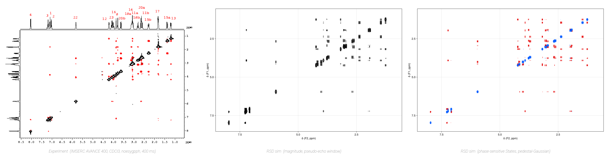
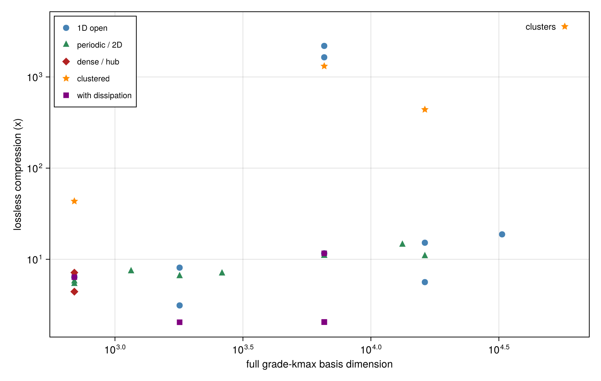
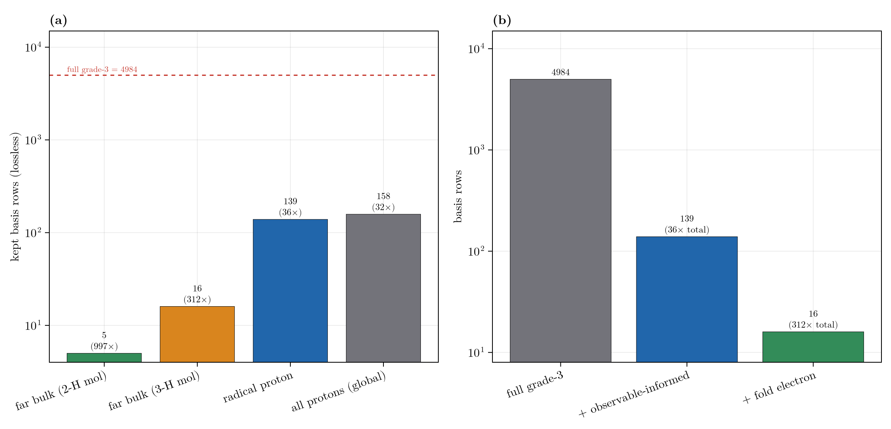
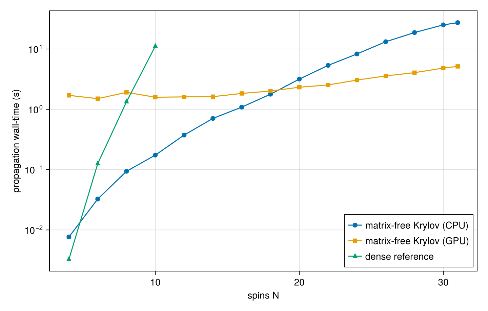
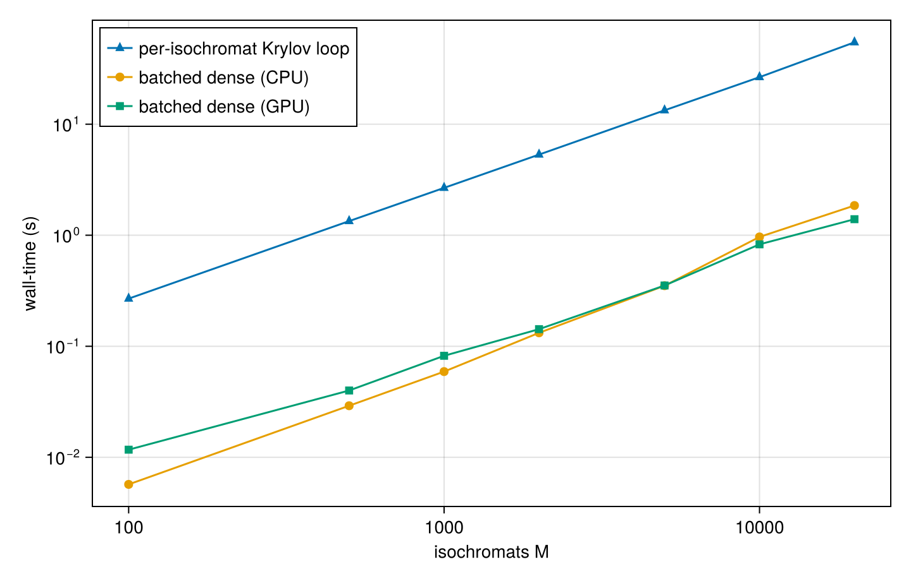

Benchmarks
What the restricted-basis method buys in practice, in three parts: exact reductions that shrink the state space (and compose), a matrix-free propagator that scales to large N, and the reduced-dynamics and non-normal diagnostics that come with grade truncation. All timings below are on an RTX 4070 (+ CPU); the scripts that produce them live under scripts/validation/ and scripts/analysis/ and write the committed CSVs in data/. This is the performance side of the story; for correctness (the method reproducing known physics against analytic and exact references) see Validation, including the Dicke-superradiance scaling, one-axis-twisting spin-squeezing, and grade-truncation exactness-floor benchmarks.
Headline

Strychnine 2D NOESY, first-principles against experiment. Left: the measured spectrum (IMSERC teaching dataset, AVANCE 400, CDCl3, 400 ms mixing). Center/right: the RSD pulse-sequence simulation (magnitude, then phase-sensitive States) from DFT couplings and PBE0/CPCM shifts, no fitted parameters. The diagonal, the J-multiplet structure, and the cross-peak pattern all reproduce the experiment.
- A real 22-spin natural product (strychnine) runs a full 2D NOESY pulse program from first-principles DFT couplings (a B3LYP J-network on the pcJ-1 (¹H) / 6-31G* (heavy) basis, gas phase; ¹H shifts refined at ORCA PBE0/6-311+G(2d,p) GIAO CPCM(chloroform)), its grade-3 restricted basis of 43,726 rows standing in for
4^22 ≈ 1.8e13rows of full Liouville space (the256 x 1024noesygpphacquisition is in Validation). - Reachable-set truncation compresses a 57,205-row basis to 16 rows, losslessly (obs_err ~ 6e-16) when the observable is local on a weakly-connected system.
- The reductions compose: 312x on a real radical + solvent mixture: observable-informed reachability times fast-electron elimination, for a radical-proton observable.
- N = 64 spins live in a 20-row symmetric sector (
kmax = 3) versus4^64 ≈ 3.4e38(spin-1/2) in full Liouville space. - A 20,000-isochromat inhomogeneous ensemble (400,000 Liouville-space rows) propagates exactly in 1.4 s, 39x faster than a per-isochromat loop.
Shrinking the State Space
The method's core is a stack of exact, composable reductions. Grade truncation sets the ceiling; on top of it, point-group / permutation symmetry, generator- and observable-informed reachability, and (for a fast subsystem) mean-field elimination each shrink the basis along an independent axis, so they multiply.
Grade and Symmetry
Independent of the dynamics, exact reductions shrink the basis itself:
- Coherence-order sectors:
restricted_basis(N, kmax; parity = :even)~2x;weight = w~3-8x. - Site-permutation symmetry:
SpinClassescollapses one class of magnetically-equivalent spins toC(kmax+3, 3)rows independent of N (spin-1/2; the3s becomed^2-1for spin-S): atN = 30, kmax = 4that is 2,333,431 -> 35. - Multi-dimensional irreps: on Oh (
N = 6, kmax = 4) the full block decomposition takes the spectrum 5.7x faster than a denseeigen, matching it to 4e-12. - The ceiling: a full 64-spin symmetric sector is just
C(6, 3) = 20rows (kmax = 3) versus4^64 ≈ 3.4e38in full Liouville space. TheN <= 64limit is structural (the propagation floor is in Reduced Dynamics and Diagnostics).
Reachability and the Observable-Informed Basis
The generator/state-informed truncation (reachable_basis, propagate_adaptive) keeps only the grade-kmax strings actually reachable from the initial state (and, in the observable-informed :observable direction, back-reachable from the observable). It is lossless (the restricted dynamics equal the full grade-kmax dynamics to machine precision) and the compression grows with system size, because the full grade-kmax basis grows far faster than the reachable set.
| System | full grade-3 dim | reachable dim | lossless compression | obs_err |
|---|---|---|---|---|
| chain, N=8, local | 1,789 | 221 | 8.1x | 1e-16 |
| chain, N=16, local | 16,249 | 1,069 | 15.2x | 1e-16 |
| chain, N=20, local | 32,551 | 1,733 | 18.8x | 1e-16 |
| 8x 3-clusters, N=24, local (hero) | 57,205 | 16 | 3,575x | 6e-16 |
Trading a little accuracy (the zero_track_elimination / lossy propagate_adaptive drop) traces a Pareto frontier that reaches far higher compression, e.g. chain N=20 to 486x at obs_err ~ 0.27.

The online adaptive engine runs on the CPU; the static reachable_basis reduced generator can be handed to propagate(...; backend = :gpu) when it is large enough to benefit (see the note in propagate_adaptive).
Composing Reductions
These reductions stack, and the automatic ones adapt to the problem. A good stress case is a heterogeneous mixture: a nitroxide radical (TEMPOL-like: electron + ¹⁵N + ring protons) in solvent, some of it coupled to the radical, some bulk. The electron is a hyperfine hub for its own molecule, so what an observable needs depends on where it sits.

(a) The :observable direction keeps only the strings on a path from state to observable, so the basis is tailored to each probe: 5 rows for a bulk-solvent proton (997x) up to 139 for a radical proton pulling in the paramagnetic cluster (36x), each lossless (obs_err = 0). (b) The reductions stack: for the radical proton, grade truncation (4984) then observable-informed reachability (139) then mean_field_reduce folding the fast electron into a mean field plus a relaxation channel (16 rows), 312x together (the fold also removes the stiff GHz electron clock). grade_tiers automates the grade on top; the axes multiply.
Propagation at Scale
With the basis reduced, the matrix-free Krylov propagator scales to large N, and an exact batched propagator handles inhomogeneous ensembles.
Backend Scaling
For a fixed grade (kmax = 3) the restricted basis grows polynomially in N, and the matrix-free Krylov propagator (propagate) tracks the sparse nnz(𝓛) rather than the dense dim^2. The dense matrix-exponential reference (propagate_dense) hits a storage wall early; the propagate_gpu path pulls ahead at large N.
| N | basis dim | nnz(𝓛) | dense (s) | Krylov CPU (s) | Krylov GPU (s) |
|---|---|---|---|---|---|
| 10 | 3,676 | 180,476 | 11.1 | 0.17 | 1.6 |
| 20 | 32,551 | 2,922,151 | DNF (17 GB) | 3.2 | 2.3 |
| 31 | 125,644 | 16,834,148 | DNF (253 GB) | 27.4 | 5.1 |
At N=10 the sparse Krylov path already beats dense 64x; by N=31 the dense reference would need ~253 GB, while the GPU propagates the 125,644-row system in ~5 s. (The GPU path carries a fixed ~1.5 s CUDA warm-up floor, so it only wins once the work exceeds it.)

Batched Inhomogeneous Ensembles
An inhomogeneous ensemble is binned into M isochromats, independent generators L_m = L0 + δ_m·D sharing a (SpinClasses-reduced) basis, summed at readout. propagate_ensemble forms the exact per-block propagator exp(dt·L_m) ahead of time and applies it to all M blocks as a single batched matvec (gemm_strided_batched! on the GPU). It is machine-precision exact, and reframing the per-isochromat Krylov loop as a batched dense propagator is the dominant win; the device is secondary.
| M isochromats | Liouville rows | per-isochromat loop (s) | batched CPU (s) | batched GPU (s) |
|---|---|---|---|---|
| 1,000 | 20,000 | 2.67 | 0.06 | 0.08 |
| 5,000 | 100,000 | 13.33 | 0.35 | 0.35 |
| 20,000 | 400,000 | 54.62 | 1.85 | 1.40 |
The batched reformulation is ~30x over the loop on the CPU alone; the GPU adds a further ~1.3x at large M (it is launch/overhead-bound at these small per-block sizes, so precision = :single gives no gain).

Reduced Dynamics and Diagnostics
Grade truncation discards the high-order complement; this block is about what that costs and how to control it, by folding the complement back onto the kept core as a memory kernel rather than dropping it.
The Memory Kernel
Grade truncation need not drop the discarded correlations. The complement can be folded back onto the kept core as a Nakajima-Zwanzig memory kernel (grade_tiers / grade_reduce assign each grade shell one of the tiers :exact, :memory (non-Markovian kernel), :markov (Schur fold, effective_liouvillian), or :drop, under one err_tol knob; see Nakajima-Zwanzig Formalism).
Whether such a complement can be folded cheaply (a short Markovian kernel versus a long one) is set by the complement generator Q𝓛Q, which is non-normal, so its spectral abscissa gives only the tail rate and the kernel K(τ) = P𝓛Q e^{τ Q𝓛Q} Q𝓛P can grow transiently before it decays. The Spectral (Contour) tools bound ‖K(τ)‖ rigorously:

(a) An engineered kernel humps to 3.1x before decaying (:stable_transient): the numerical abscissa ω > 0 and the Kreiss bracket bound the hump, which the spectral abscissa α (the tail slope) undershoots. (b) A physical grade-1|grade-2 kernel of a collectively-decaying spin system: ω < 0 certifies monotone decay (:stable_monotone). These meters drive the :memory-versus-:markov tier choice.
Reproducing
julia --project scripts/analysis/adaptive_basis_benchmark.jl # -> data/adaptive_basis_benchmark.csv
julia --project scripts/validation/benchmark_backends.jl # -> data/benchmark_backends.csv
julia --project scripts/validation/benchmark_ensemble.jl # -> data/benchmark_ensemble.csv
julia --project=scripts scripts/analysis/plot_benchmarks.jl # -> docs/src/assets/benchmarks/*.pngThe seven guide figures embedded across the manual (grade scaling, grade convergence, reductions, relaxation dispersion, higher spin, adaptive reductions, memory kernel) come from the same CSV-in / PNG-out pipeline:
julia --project=scripts scripts/analysis/emit_docs_figure_data.jl # -> data/basis_scaling.csv, relaxation_dispersion.csv, symmetry_compression.csv
julia --project=scripts scripts/validation/validate_higher_spin.jl # -> data/higher_spin_{exactness,scale,trace}.csv (also the exactness gate)
julia --project scripts/analysis/observable_informed_showcase.jl # -> data/observable_informed.csv, reduction_stack.csv (F6)
julia --project=scripts scripts/analysis/memory_kernel_bounds.jl # -> data/memory_kernel_bounds_{toy,physical}.csv (F7)
julia --project=scripts scripts/analysis/plot_docs_figures.jl # -> docs/src/assets/figures/f1..f7*.pngFigures F2 and F3 reuse existing CSVs (grade_memory_cost.csv, adaptive_basis_benchmark.csv, symmetry_compression.csv, f3_spotlights.csv); F6 and F7 use the two showcase scripts above.